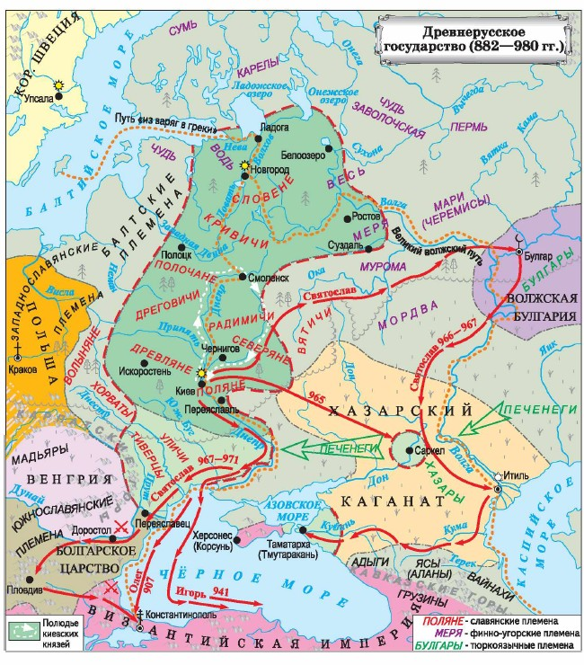

Введение
Две великие державы средневековья
X век стал временем активного взаимодействия Древнерусского государства с Византийской империей. Отношения между ними носили многогранный характер: от военных столкновений до тесного торгового и культурного сотрудничества, завершившегося принятием христианства [[2]].
Этот период заложил основы русской государственности, культуры и духовности, определив исторический путь России на столетия вперёд. Византия стала для Руси окном в мир античного наследия, высокой дипломатии и христианской веры [[5]].

Миниатюра из древнерусской летописи, изображающая поход на Царьград
Основные события
862 год
Призвание варягов. Начало русской государственности.
882 год
Олег объединил Новгород и Киев.
907 год
Поход Олега на Константинополь.
911 год
Договор Руси с Византией.
941-944 гг.
Походы Игоря на Византию.
957 год
Княгиня Ольга крестилась в Константинополе.
988 год
Крещение Руси князем Владимиром.

Карта Древнерусского государства в X веке